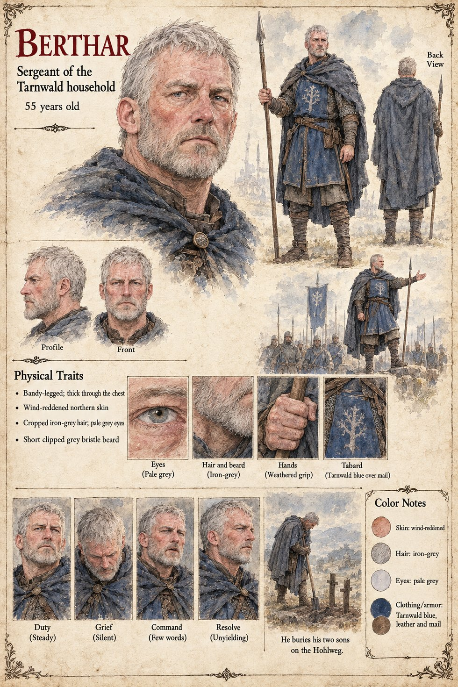

Berthar
Sergeant of the Tarnwald household, the Duke's man for thirty years · 55 years old by his sheet
A bandy-legged, deep-chested sergeant of the household of the Duke of Tarnwald, fifty-five, wind-reddened and iron-grey, who carries a spear and wears Tarnwald blue over mail, the tabard with a pale tree on it. Gerold, the captain of the Duke's gate-guard, wears the same blue; the sheet does not say how the two ranks stand to one another. Its large scene draws him at the head of a column of spearmen under a blue banner, one arm out in command, and its last, captioned He buries his two sons on the Hohlweg, has him alone on a hillside with a spade beside two wooden crosses. The Hohlweg is the road on which, on Ansbert's and Brun's pages, the household finds the stranger; his sons, two young men of twenty-two and nineteen, die of the flux in the Hohlweg camp, neither of them having seen an enemy (Chapter 14).
His expression panels run Duty (Steady), Grief (Silent), Command (Few words) and Resolve (Unyielding). The publication notes call him the Duke's man for thirty years and give him a boar-spear; in Chapter 16 he steps out of the front block and speaks the sentence the army follows, and stays behind to bury the steward, presumably Odilo. Written from the sheet, from what the other Case 4181 pages already say, and from the character notes in the case's publication-prep file; the manuscript itself was not to hand. His age of 55, bandy-legged thick-chested build, wind-reddened northern skin, cropped iron-grey hair, pale grey eyes and short clipped grey beard are the sheet's own.